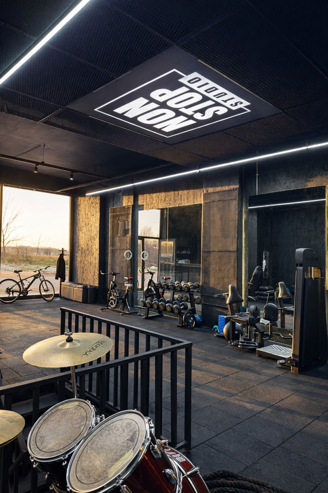
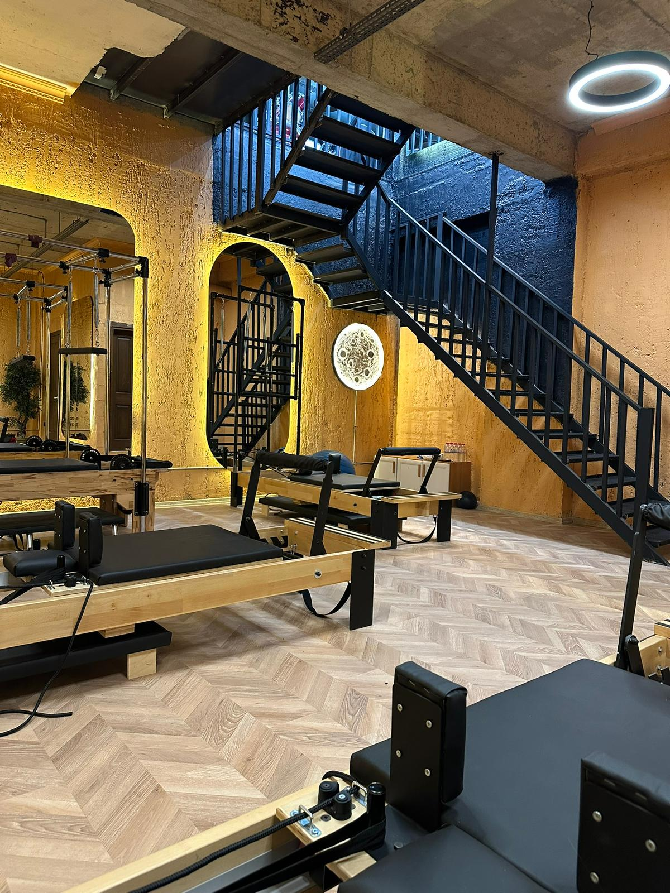

Reformer Pilates
Bireysel (PT), düet ve butik grup seanslarıyla duruşunuzu düzeltin; esneklik ve çekirdek (core) kuvveti kazanın.

Kartepe
Sadece bir stüdyo değil; disiplin, estetik ve gelişimin adresi.
Klasik spor salonu deneyiminin ötesine geçerek, altın ve siyahın güçlü estetiğiyle tasarlanmış modern alanımızda üst düzey bir antrenman deneyimi sunuyoruz.
Hedefinize göre seçin; programı birlikte kuralım.
Bireysel (PT), düet ve butik grup seanslarıyla duruşunuzu düzeltin; esneklik ve çekirdek (core) kuvveti kazanın.
Kas gelişimi, form tutma ve kuvvet odaklı çalışmalar; modern ekipmanlarla hedefe yönelik programlar.
Günlük yaşam hareketlerini temel alan güç, dayanıklılık, mobilite ve yüksek kondisyon odaklı programlar.

Bilgilerinizi bırakın, size dönelim. Telefon ve WhatsApp yukarıda — acelesi olan oradan yazabilir.